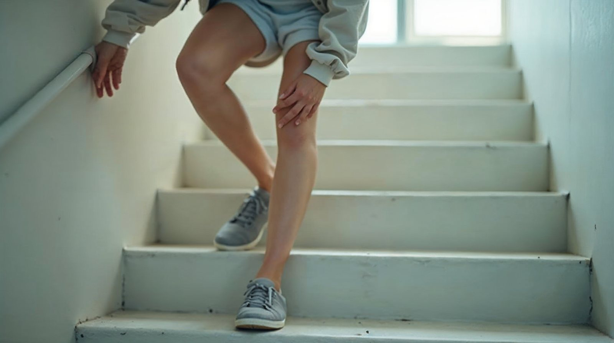
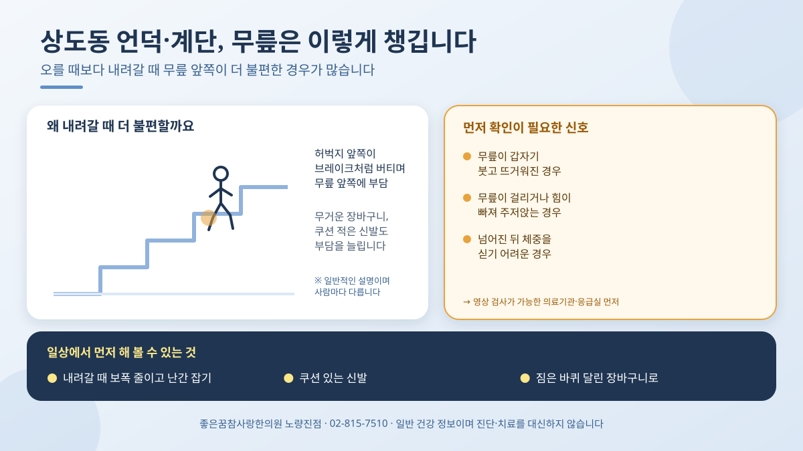

이종호 한의사 감수좋은꿈참사랑한의원 대표원장 (한의사 면허번호 19769)발행 2026-11-23 · 수정 2026-11-26
이 글의 차례
상도동 언덕과 계단을 매일 오르내리다 무릎이 시큰해졌다면, 저는 오르는 길보다 내려가는 길부터 바꿔 보시라고 말씀드립니다. 보폭을 줄여 천천히 디디고, 짐은 나눠 들고, 쿠션 있는 신발을 신고, 내리막 한 구간만이라도 마을버스로 대신해 보는 것부터입니다.
저녁 여섯 시쯤, 장바구니를 양손에 나눠 들고 언덕을 오릅니다. 숨은 차도 무릎은 그럭저럭 버텨 줍니다. 탈은 다음 날 아침에 납니다. 같은 길을 내려가는 첫걸음부터 무릎 앞쪽이 뻐근하고, 계단 앞에서는 저도 모르게 난간부터 찾게 됩니다.
상도동에 산다는 건 하루에도 몇 번씩 오르고 내린다는 뜻입니다. 역에 갈 때도, 장 보러 갈 때도, 아이를 데리러 갈 때도 길은 평평하지 않지요. 피할 수 없는 길이라서 무릎이 한번 신경 쓰이기 시작하면 걱정도 그만큼 커집니다.
진료실에서 이런 말씀을 자주 듣습니다. 이 동네 살면 무릎은 원래 이런 것 아니냐고요. 저는 그 말에 담긴 체념이 마음에 걸립니다. 길은 바꿀 수 없어도, 걷는 방법과 다니는 순서는 바꿀 수 있으니까요.
왜 이런 불편이 생길 수 있나요
내리막과 계단을 내려갈 때는 허벅지 앞쪽 근육이 브레이크처럼 버티며 몸무게를 받아 냅니다. 그때 무릎 앞쪽에 부담이 실리기 쉽습니다. 오를 때는 숨이 차고, 내려갈 때는 무릎이 시큰하다는 말이 그래서 나옵니다.
여기에 무게가 더해집니다. 무거운 장바구니를 들면 그만큼 무릎에 실리는 무게가 늘고, 한 손에 몰아 들면 몸이 기울어 한쪽 무릎이 더 버팁니다. 쿠션이 적거나 밑창이 닳은 신발은 디딜 때마다 오는 충격을 덜 받아 줍니다.
허벅지 근육이 약해졌거나 몇 해 사이 체중이 조금씩 늘었다면 같은 길도 더 힘들게 느껴질 수 있습니다. 한의학에는 다리에 힘이 빠져 걸음이 흔들리는 상태를 하지허약이라고 부르는 말이 있습니다. 기와 혈이 부족해지면 다리 힘이 빠지고 무릎과 허리 관절도 약해진다고 봅니다.
저는 이것을 나이 탓으로만 끝내지 않으려고 합니다. 아픈 것을 덜 아프게 하는 일과 함께, 다시 힘을 내어 몸을 쓸 수 있게 돕는 일이 있습니다. 재활이라고 부르는 일이지요. 그래서 무릎만 들여다보지 않고 다리 전체의 힘과 발목, 고관절, 걷는 모습을 함께 봅니다.
언덕과 계단은 무릎에 다르게 실립니다
같은 내려가기라도 언덕과 계단은 조금 다릅니다. 계단은 한 칸 내려설 때마다 무릎을 깊게 굽혀 몸무게를 받아 내야 합니다. 긴 비탈길은 그만큼 깊이 굽히지는 않아도, 브레이크를 잡는 걸음이 길게 이어집니다.
그래서 계단에서 유독 시큰한 분이 있고, 긴 비탈을 다 내려온 뒤에야 무릎이 묵직해지는 분이 있습니다. 어느 쪽인지 알면 길을 고르기가 쉬워집니다. 계단이 힘들다면 조금 돌아가더라도 경사가 완만한 길을, 긴 내리막이 힘들다면 그 구간만 마을버스를 타는 식이지요.
계단을 내려갈 때 무릎이 왜 더 힘든지는 계단을 내려갈 때 무릎이 아프면 한의원에서는 무엇을 먼저 묻나요?에 자세히 적어 두었습니다.
추운 아침도 조심할 때입니다. 밤새 굳은 몸으로 집 앞 내리막부터 서둘러 내려가면 첫걸음이 더 뻣뻣하게 느껴지기 쉽습니다. 현관을 나서기 전에 발목을 몇 번 돌리고 무릎을 폈다 굽혀 몸을 먼저 깨워 주세요.
먼저 이렇게 여쭙니다
- 매일 오르내리는 언덕이나 계단이 있나요?
- 오를 때와 내려갈 때 중 언제 더 불편한가요?
- 무릎이 붓거나 걸리는 느낌이 있나요?
- 어떤 신발을 주로 신나요?
- 무거운 장바구니를 자주 드시나요?
- 예전보다 언덕 중간에 쉬어 가는 횟수가 늘었나요?
질문이 많아 보여도 정답을 맞히시라는 것이 아닙니다. 하루 동선을 같이 그려 보면 무릎이 언제 가장 많이 버티는지 보이고, 그 순간부터 바꿔 볼 수 있기 때문입니다.
예를 들면 이런 경우입니다
동네에서 자주 듣는 모습을 몇 가지 옮겨 봅니다. 특정한 누군가의 이야기가 아니라 여러 분께 비슷하게 듣는 장면입니다.
예를 들어 일주일 치 장을 한 번에 보고 언덕을 오르는 분이라면, 오를 때보다 다음 날 그 길을 내려갈 때 무릎이 더 시큰하다고 하십니다. 이럴 때는 장 보는 날을 나누고, 바퀴 달린 장바구니를 쓰되 내리막에서는 끌려가지 않게 손잡이를 단단히 잡고 천천히 내려오자고 말씀드립니다.
예를 들어 예전에는 동네 언덕을 쉬지 않고 올랐는데 요즘은 중간에 두세 번 쉬어야 하고, 허벅지가 눈에 띄게 가늘어졌다는 분이라면 그 변화를 언제부터 느꼈는지 함께 짚어 봅니다. 무릎만의 문제인지, 다리 힘 전체가 줄어든 것인지부터 가려야 하고, 먼저 확인할 검사가 필요한지도 함께 봅니다.
예를 들어 인공관절 수술을 받은 뒤 언덕길이 다시 부담스럽다는 분도 계십니다. 새 관절을 붙잡고 있는 것은 여전히 내 근육이라, 수술 뒤에도 위아래 근육을 풀고 힘을 기르는 일이 남습니다. 이때는 수술 시기와 수술한 병원의 설명을 먼저 알려 주셔야 침 치료가 가능한지도 정할 수 있습니다.
스스로 점검해 보세요
아래에서 해당하는 것이 몇 개인지 세어 보세요.
- 언덕이나 계단을 내려갈 때가 오를 때보다 무릎 앞쪽이 더 시큰하다
- 장바구니나 가방을 한쪽 손에 몰아 드는 편이다
- 밑창이 닳았거나 바닥이 딱딱한 신발을 자주 신는다
- 많이 오르내린 날 저녁이나 다음 날 아침에 무릎이 뻣뻣하다
- 비 오는 날이나 어두운 저녁에도 서둘러 비탈길을 내려간다
- 무릎이 불편해 외출이나 장보기를 미루는 날이 생겼다
두세 가지가 겹친다면 걷는 방법과 다니는 길을 하나씩 바꿔 볼 때입니다. 마지막 항목에 해당한다면 미루지 말고 한번 상담해 보셨으면 합니다. 움직임이 줄면 다리 힘과 균형도 함께 떨어지기 쉽기 때문입니다.

일상에서 먼저 해 볼 수 있는 것
- 내려갈 때는 보폭을 줄이고 난간 잡기
- 쿠션이 있는 편한 신발 신기
- 무거운 짐은 바퀴 달린 장바구니 이용하기
- 마을버스를 섞어 이용해 오르내리는 길 줄이기
- 계단을 많이 내려간 날 저녁에는 허벅지 앞쪽을 가볍게 풀어 주기
이 가운데 제가 가장 자주 드리는 말씀은 보폭입니다. 뒤에 있는 발이 앞발을 너무 멀리 앞서 나가지 않게, 앞발 근처까지만 내딛는 종종걸음입니다. 마음에는 젊을 때의 성큼성큼한 걸음이 남아 있어서, 몸은 지금의 몸인데 마음이 예전 속도를 내곤 하지요.
복지관 강연에서 한 어르신이 물으셨습니다. 방송에서는 보폭을 넓게, 빠르게 걸으라던데 어느 말이 맞느냐고요. 건강한 분께는 그 말이 맞습니다. 다만 몸이 불편한 분이 그대로 따라 하다가 무리해서 넘어지는 일이 생깁니다. 제가 바라는 것은 내 몸이 감당하는 걸음으로 오래, 꾸준히 걷는 것입니다.
허벅지 힘을 지키는 동작도 하나 권합니다. 의자에 앉아 한쪽 무릎을 쭉 펴고 5초 버틴 뒤 내려놓기를 하루 10번쯤, 아프지 않은 범위에서 해 보세요. 하고 난 다음 날 무릎이 더 아프면 횟수를 절반으로 줄입니다.
따로 운동을 하시던 분이라면 강도를 70% 정도로 낮춰 보시길 권합니다. 장 보러 가고 역까지 걷는 일상 걸음은 그대로 두고, 운동 삼아 일부러 계단을 더 오르내리던 것만 잠시 줄이는 식입니다.
다니는 길을 다시 그려 봅니다
같은 곳을 가더라도 어느 길로, 무엇을 타고 갈지는 고를 수 있습니다. 저는 오르막은 천천히 걸어서 가고, 무릎에 더 부담이 되는 내리막은 아껴 쓰자고 말씀드립니다. 내려가는 한 구간만 마을버스를 타도 하루에 무릎이 버티는 횟수가 꽤 줄어듭니다.
오르막에서는 숨이 차면 멈춰 쉬어도 괜찮습니다. 한 번에 올라야 한다는 생각이 오히려 무릎과 허리를 더 지치게 합니다. 장은 나눠서 보고, 무거운 날은 가족에게 부탁하는 것도 무릎을 아끼는 방법입니다.
엘리베이터나 마을버스를 타는 것을 게으름으로 여기는 분이 계신데, 저는 그렇게 보지 않습니다. 오늘 아낀 무릎으로 내일 또 걸을 수 있다면, 그건 무릎을 오래 쓰는 방법입니다.
장바구니를 들고 언덕을 오른 뒤 손목과 팔꿈치까지 시큰하다면 장바구니를 들고 언덕길을 오르고 나면 손목과 팔꿈치가 시큰할 때는 어떻게 살피나요?도 함께 읽어 보세요.
출퇴근길 지하철 계단이 걱정이라면 노량진역에서 환승하며 계단을 오르내리는 출퇴근길에 무릎이 시큰할 때는?에 따로 정리해 두었습니다.
많이 오르내린 날 저녁에는
장을 보느라 언덕을 몇 번씩 오르내린 날에는 저녁에 무릎을 한번 들여다봐 주세요. 붓기나 열감 없이 뻐근하기만 하다면 따뜻한 찜질을 15~20분쯤 대 보세요. 찜질 뒤 시원하게 풀리면 그 방법을 이어 가고, 쥐가 나거나 욱신거림이 늘면 그날은 멈춥니다. 찜질기를 켠 채로 잠들지는 마세요.
다음 날 아침도 기준이 됩니다. 일어났을 때 무릎이 전날보다 더 뻣뻣하다면 전날 오르내린 양이 조금 많았다는 뜻으로 보고, 그날은 내리막 한 구간을 더 아껴 보세요. 평소와 같다면 지금의 양을 이어 가셔도 됩니다.
내리막에서 넘어지지 않으려면
넘어지는 이유는 한 가지가 아닙니다. 다리 힘이 떨어졌을 때, 균형 감각이 둔해졌을 때, 눈이 침침할 때, 드시는 약이 여러 가지일 때, 그리고 길이 젖었거나 어두울 때입니다. 언덕이 많은 동네에서는 이 가운데 하나만 겹쳐도 내리막이 훨씬 조심스러워집니다.
비나 눈이 온 날 비탈길에서는 미끄러질까 봐 온몸에 힘이 들어가고 무릎도 그만큼 굳습니다. 저는 그런 날에는 무리해서 나가지 마시고, 꼭 나가야 한다면 어두워진 저녁보다 밝은 낮 시간을 고르시라고 말씀드립니다. 밑창이 닳아 미끄러운 신발이나 뒤꿈치가 없는 슬리퍼는 내리막에서 특히 피해 주세요.
드시는 약이 여러 가지라면 졸림이나 어지럼이 겹칠 수 있습니다. 그래서 저는 진료 때 드시는 약을 봉투째 모두 가져와 달라고 부탁드립니다. 줄여도 되는지는 혼자 정하지 마시고, 처방한 의사나 약사에게 약을 모두 보여 드리고 상의하세요.
눈이 건조하거나 시야가 어른어른하다면 안과에서도 한번 확인해 두세요. 발밑이 잘 보여야 내리막에서 디딜 자리를 고를 수 있습니다.
한의원에서 함께 살필 수 있는 경우
- 계단을 내려갈 때 무릎이 불편한 경우 동작과 걷는 습관을 함께 살핍니다.
- 무릎과 함께 허리나 발목이 불편한 경우 몸 전체의 균형을 함께 살핍니다.
- 필요하다고 판단될 때 침, 추나, 온열 등을 상태에 맞게 이어서 씁니다.
좋은꿈참사랑한의원에서는 계단을 오르내릴 때 어느 순간이 불편한지 먼저 듣고, 필요하다고 판단될 때 초음파로 무릎 주변을 살핍니다. 걷는 모습과 허리·발목까지 함께 본 뒤 침·약침·추나·온열 등 상태에 맞는 방법을 정하고, 귀가 전에는 집에서 할 수 있는 동작과 걷는 요령을 알려 드립니다.
처음 오시는 날은 오시는 길에 숨이 차셨을 수 있어, 잠시 앉아 숨을 고르신 뒤에 시작합니다. 하루에 오르내리는 길과 불편한 순간을 먼저 듣고, 양손을 내어 달라고 해 맥을 짚습니다.
손목을 짚는 동안에도 이야기는 편하게 이어 가셔도 됩니다. 저는 맥을 보면서 잠과 소화, 손발이 찬 편인지를 여쭙고 듣습니다. 무릎 때문에 왔는데 왜 잠을 묻나 싶으시겠지만, 잠을 설친 다음 날 같은 언덕이 더 버겁게 느껴진다는 분이 많습니다.
그다음 의자에서 일어나 앉기와 몇 걸음 걷기를 해 보시게 하고, 무릎 주변을 눌러 보고 움직여 보며 붓기와 아픈 자리, 허벅지 힘을 확인합니다. 영상 검사가 더 필요해 보이면 가능한 의료기관을 먼저 안내합니다.
가장 불편한 곳은 원장이 직접 침이나 추나 등으로 살피고, 그 밖의 뻐근한 곳은 직원이 온열 같은 물리치료로 이어서 돕습니다. 치료를 마치면 "시원하세요? 괜찮으세요?" 하고 여쭙고, 불편하다고 하시면 다시 봅니다.
치료한 자리와 그날의 반응은 기록해 둡니다. 다시 오시면 그 기록을 보며 그사이 언덕길이 어땠는지부터 이어서 여쭙습니다.
사진 속 무릎과 내가 느끼는 무릎
사진을 찍었더니 무릎이 닳았다는 말을 들었다며 걱정하시는 분이 많습니다. 그런데 사진에 보이는 모습과 아픈 정도가 꼭 같지는 않습니다. 닳은 곳이 있어도 둘레의 근육과 걸음을 잘 돌보면 그 무릎을 쓸 수 있는 시간이 달라질 수 있습니다.
한번은 어르신들 앞에서 어머니 댁의 오래된 자개장 이야기를 한 적이 있습니다. 문을 열면 삐걱거리고 자리도 많이 차지해 저는 내다 버리고 싶었는데, 어머니는 아침마다 마른 수건으로 그 장의 먼지를 닦으십니다. 가끔 몰래 열어 보면 여전히 멀쩡합니다.
오래된 것을 매일 닦고 아끼는 그 마음으로 내 다리를 돌봐 주셨으면 했습니다.
오래 쓴 무릎을 젊을 때로 되돌려 드릴 수는 없습니다. 지금의 무릎으로 가장 잘 걸으실 수 있게 돕는 것, 제가 현실적인 한의학이라고 부르는 일이 그것입니다. 그러려면 얼마나 걷고 싶으신지, 무엇이 힘드신지, 어제는 어땠는지를 여쭈어야 합니다.
이렇게 기록해 오시면 상담이 쉬워집니다
거창한 기록은 필요 없습니다. 불편한 순간이 오를 때인지 내려갈 때인지, 하루에 오르내리는 계단과 언덕이 어디인지, 붓기나 걸리는 느낌이 있었던 날만 휴대폰 메모에 한 줄씩 적어 오세요.
평소 가장 자주 신는 신발을 신고 오시면 밑창이 닳은 모양도 함께 볼 수 있습니다. 예전에 받은 무릎 검사 결과지가 있다면 같이 챙겨 주세요.
이런 증상은 먼저 확인이 필요합니다
- 무릎이 갑자기 붓고 뜨거워진 경우
- 무릎이 걸리거나 힘이 빠져 주저앉는 경우
이런 신호가 있으면 한의원보다 가까운 병원이나 응급실을 먼저 찾으세요.
내일 아침 집 앞 내리막에서
매일 오르내리는 길에서 무릎이 신경 쓰이기 시작하면 동네가 조금 버겁게 느껴집니다. 그래도 그 무릎은 지금까지 언덕 위 집까지 하루도 빠짐없이 데려다준 무릎입니다. 조금 천천히 가도 괜찮습니다.
내일 아침 집 앞 내리막에서는 보폭을 조금만 줄여 보세요. 그리고 오를 때와 내려갈 때 중 언제 무릎이 더 말을 거는지 기억해 두세요. 다음에 오시면 그 길이 어땠는지부터 여쭙겠습니다.

여쭙는 것
- 매일 오르내리는 언덕이나 계단이 있나요?
- 오를 때와 내려갈 때 중 언제 더 불편한가요?
- 무릎이 붓거나 걸리는 느낌이 있나요?
생활에서 해 볼 것
- 내려갈 때는 보폭을 줄이고 난간 잡기
- 쿠션이 있는 편한 신발 신기
- 무거운 짐은 바퀴 달린 장바구니 이용하기
한의원에서 함께 살필 것
- 계단을 내려갈 때 무릎이 불편한 경우 동작과 걷는 습관을 함께 살핍니다.
- 무릎과 함께 허리나 발목이 불편한 경우 몸 전체의 균형을 함께 살핍니다.
- 필요하다고 판단될 때 침, 추나, 온열 등을 상태에 맞게 이어서 씁니다.
먼저 확인이 필요한 신호
- 무릎이 갑자기 붓고 뜨거워진 경우
- 무릎이 걸리거나 힘이 빠져 주저앉는 경우
한눈에 보는 표
| 구분 | 핵심 |
|---|---|
| 여쭙는 것 | 매일 오르내리는 언덕이나 계단이 있나요? 오를 때와 내려갈 때 중 언제 더 불편한가요? |
| 생활에서 해 볼 것 | 내려갈 때는 보폭을 줄이고 난간 잡기 쿠션이 있는 편한 신발 신기 |
| 한의원에서 함께 살필 것 | 계단을 내려갈 때 무릎이 불편한 경우 동작과 걷는 습관을 함께 살핍니다. 무릎과 함께 허리나 발목이 불편한 경우 몸 전체의 균형을 함께 살핍니다. |
| 먼저 확인이 필요한 신호 | 무릎이 갑자기 붓고 뜨거워진 경우 무릎이 걸리거나 힘이 빠져 주저앉는 경우 |
자주 묻는 질문
언덕길 걷기가 운동이 되나요?
도움이 될 수 있지만, 무릎이 불편하면 평지 걷기와 섞고 내리막 속도를 줄이는 것을 권합니다.
한의원까지 오는 길에 오르막이 있나요?
7호선 상도역 3번 출구에서 약 200m 직진한 뒤 오거리에서 우회전해 약 200m 올라오시면 됩니다. 노량진역 3번 출구 쪽에서는 마을버스 동작01을 타고 신동아리버파크 정류장에서 내리면 건너편 건물 3층입니다.
무릎 보호대를 하면 도움이 되나요?
오래 걷는 날 잠깐 쓰는 것은 괜찮을 수 있지만, 하루 종일 꽉 조이는 것은 피하는 것이 좋습니다. 맞는지는 진료 때 함께 봅니다.
계단을 오를 때 어느 다리부터 디디면 좋나요?
오를 때는 덜 아픈 다리부터, 내려갈 때는 아픈 다리부터 디디라는 안내가 흔히 쓰입니다. 난간을 함께 잡으면 더 안전합니다.
좋은꿈참사랑한의원은 재진 때 지난번 이야기부터 이어서 여쭙니다. 진료시간과 예약은 오시는 길에서 확인하세요.
어디서 상담받을 수 있나요?
좋은꿈참사랑한의원은 서울 동작구 만양로2길 2 신성빌딩 3층·5층(서울 동작구 상도동, 7호선 상도역 3번 출구 근처)에 있습니다. 한의사 3명(이종호 대표원장, 조영기 수석진료원장, 정원영 진료원장)이 진료합니다. 진료시간은 평일 09:30~20:00(점심 13:00~14:00), 토·일·공휴일 09:30~15:00이며, 방문 전 전화로 확인을 권합니다. 예약은 네이버 예약, 카카오톡 상담, 전화 02-815-7510로 받습니다.
이 글은 일반적인 건강 정보이며 개인의 진단이나 치료를 대신하지 않습니다. 증상이 있거나 복용 중인 약이 있다면 진료를 통해 확인하세요. 치료 효과는 개인마다 다를 수 있습니다.
작성 기준: 일반적으로 알려져 있는 건강 정보를 참고해 정리했습니다(대표원장 감수). 증상 기록은 1~2주 동안 하루 1회, 비슷한 시간에 적어 오시면 지난 상태와 비교하기 쉽습니다.